[프랑스 시위 진짜 이유] 세금은 세계 최고 수준인데 나라 곳간은 텅 비었다. 은퇴자는 잘 살고 학생은 화장실도 못 간다? 프랑스를 망가뜨린 진짜 원인은 연금? (손진석 기자)
▶ 원본 영상 보기한눈에 보기
- 프랑스 학생 시위는 낡고 더러운 학교 시설과 교사 부족에서 시작됐습니다. 중앙정부 교육 예산의 94%가 급여·연금 같은 인건비성 고정 지출이라 시설에 쓸 돈이 거의 없습니다.
- 세금은 GDP의 46%로 세계 최고 수준입니다. 그런데도 국가채무는 GDP의 119%, 연간 재정적자는 약 220조 원에 이릅니다.
- 손진석 기자는 핵심 원인으로 연금을 꼽습니다. 소득대체율이 72%에 이르고, 연금 지급액 610조 원 가운데 약 210조 원을 정부가 메웁니다.
- 고용주가 내는 사회보험료가 지나치게 높습니다. 그래서 공장·일자리가 해외로 빠져나가고 청년실업률은 19.8%입니다. 아프리카 옛 식민지에서 얻던 이익도 2020년대 들어 무너졌습니다.
- 그는 디폴트 가능성은 낮다고 봅니다. 다만 대선 주자들이 오히려 연금을 늘리겠다고 해, 스스로 개혁하지 못하면 외부 압력에 의한 긴축을 겪을 것이라고 전망합니다.
이런 분께 도움이 됩니다
- 프랑스 시위 뉴스를 보며 "선진국이 왜 저래?" 궁금했던 분: 시위의 구도와 재정 구조를 숫자로 이해할 수 있습니다.
- 연금·복지 개혁, 유럽 국채에 관심 있는 투자자: 프랑스 재정의 구멍이 어디서 생기는지 한 번에 정리됩니다.
핵심 내용
시위의 구도: 폭력은 일부, 세 그룹으로 나뉜다
- 프랑스 보험협회 추산으로 이번 시위의 상점 피해 보험금은 최대 12억 유로(약 1조 8천억 원 가까이)입니다. 시위는 갈수록 과격해지는 경향이 있습니다. (2:43)
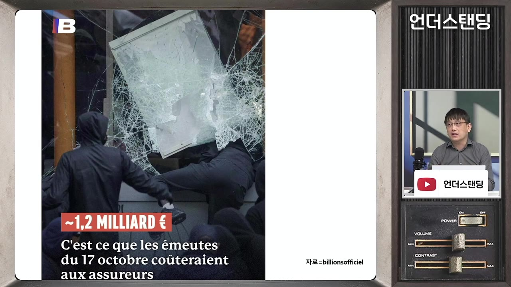
- 그렇다고 모든 시위대가 부수는 것은 아닙니다. 기자는 시위대를 세 그룹으로 나눕니다.
| 그룹 | 성격 | 행동 |
|---|---|---|
| 일반 시위대 (노란 조끼 등) | 대다수, 평화적. 노란 조끼는 2018년 유류세 인상에 반발한 파리 외곽 저소득층 | 톨게이트 봉쇄 같은 실력 행사 수준 |
| 블랙블록 | 1980년대 독일에서 조직된 반자본주의 아나키스트, 2010년대 이후 프랑스에서 활동 | 경찰·은행 지점 공격, 쇠파이프·보도블록 투척. 일반 가게는 안 부숨 |
| 카쇠르(casseur, '깨부수는 사람') | 파리 외곽 저소득층·이민자 후손이 많음 | 시위 때마다 상점·명품점 상습 약탈 |
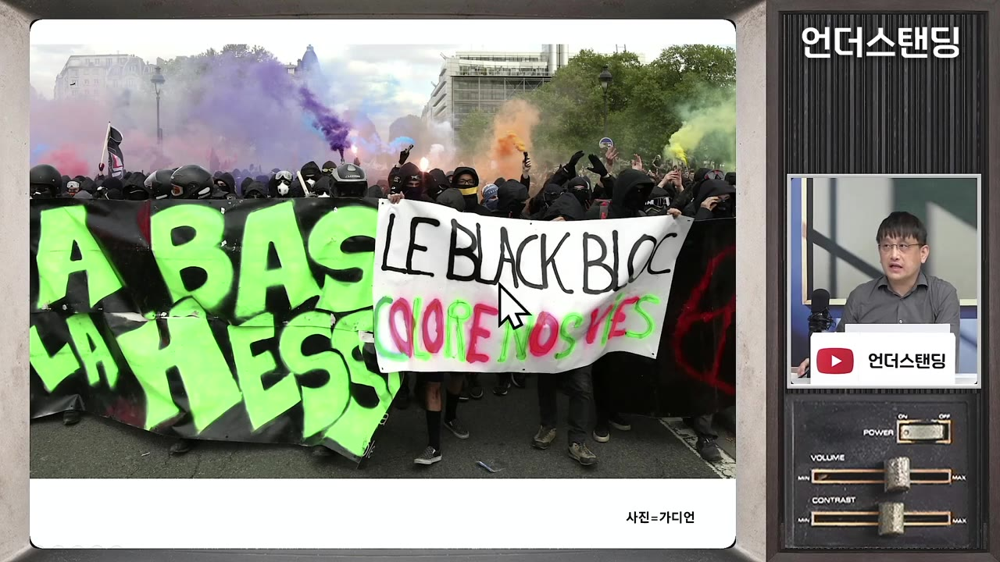
- 블랙블록 전면 대치
- 경비 빈틈 발생
- 카쇠르 약탈
- 1블랙블록 전면 대치
시위 전면에서 경찰과 격렬하게 충돌한다 (6:44)
- 2경비 빈틈 발생
경찰이 대치에 묶여 거리 곳곳에 빈틈이 생긴다
- 3카쇠르 약탈
그 틈을 노려 상점을 턴다. 두 집단은 사전에 공모하지 않는다
- 블랙블록은 오히려 "카쇠르 때문에 우리 이념 주장이 묻힌다"며 현장에서 충돌하기도 함
- 경찰의 과잉 진압 피해도 평화 시위대에게 돌아갑니다. 이번에도 학생이 실명하거나 손을 다친 사례가 있었습니다. (9:46)
- 경찰이 모든 상점을 지킬 수 없어서, 샹젤리제 명품점은 유리창을 미리 가리고 사설 경비원을 고용하며 보험에 가입합니다.
학교 시설 실태
- 중학생 설문 결과는 다음과 같습니다. (12:27)
- 3명 중 1명은 학교 화장실이 너무 더러워 사용을 피합니다.
- 65%는 용변이 급할 때도 학교 화장실에 가지 않은 경험이 있습니다.
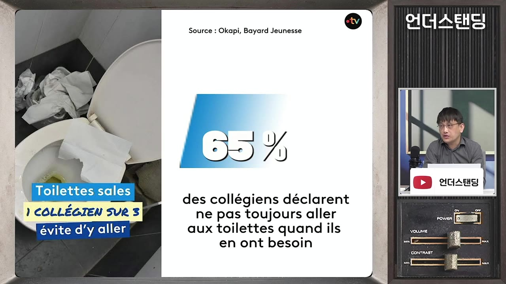
- 참다가 방광염에 걸린 학생이 있다는 보도까지 나왔습니다.
- 교실에 바퀴벌레가 돌아다니고, 쥐 등 해충을 없앨 비용도 부족합니다. (자막상 '성'으로 들려 불분명하나, 영상 설명에는 '쥐와 바퀴벌레'로 나옵니다.)
- 창문 수리가 안 되고, 여름 냉방은 당연히 없으며, 겨울 난방도 제대로 못 합니다.
- 화장실 청소는 학생이 아니라 공공서비스가 할 일이라는 인식이 강합니다. 세금을 냈으니 정부가 해야 한다는 생각입니다.
교육 예산의 94%가 인건비성 고정 지출
- 올해 중앙정부 교육 예산은 896억 유로(약 135조 원)입니다. 이 가운데 94%가 인건비성 고정 지출입니다. (13:48)
- 현직 교직원 급여·사회보험료: 593억 유로
- 공무원 연금의 모자란 돈을 메우는 연금 분담금도 교육 예산에서 나갑니다.
- 나머지 5.8%도 사립학교 보조, 대입시험 운영 등에 쓰입니다.
- 초중고 시설 투자는 지방정부 몫입니다. 중앙과 지방 예산을 합쳐도 1,556억 유로(약 233조 원) 중 73%가 인건비성이고, 시설·운영 같은 물적 투자는 27%뿐입니다. (15:22)
- 학교 건물 상당수가 50년이 넘었지만 개보수가 더딥니다. (비율은 자막상 불분명)
- 정규직 해고가 사실상 불가능해 인건비를 줄이자는 말은 아무도 하지 않습니다. 재정 압박으로 교사 월급도 거의 오르지 않아 교사들의 불만도 쌓여 있습니다.
💡 돈이 없는 게 아니라, 들어온 돈이 사람값과 연금으로 이미 묶여 있다.
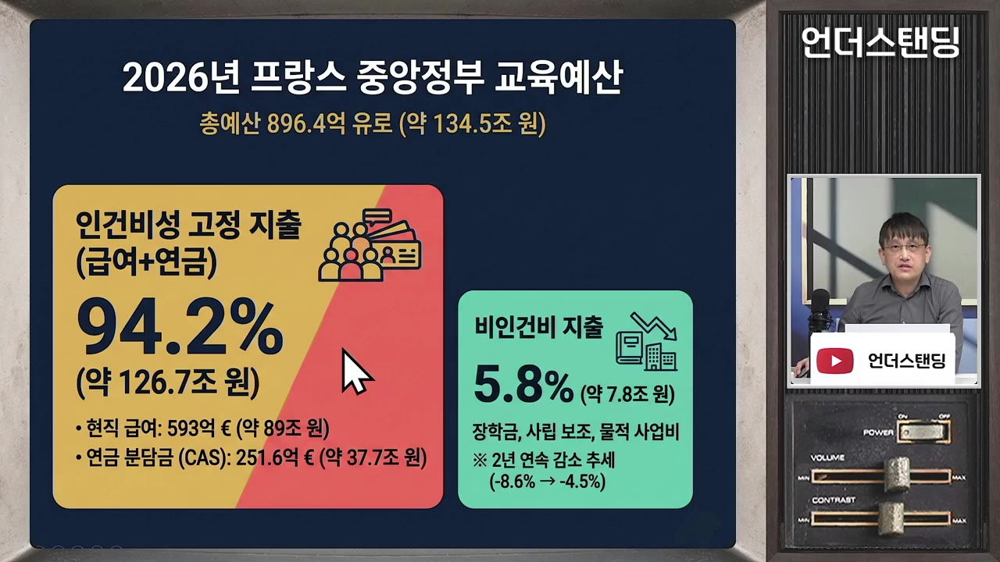
시위의 발화점: 파리 외곽 크레테유
- 시위는 파리 동남쪽 교외 도시 크레테유(자막상 '크레데이')의 생텍쥐페리 고등학교에서 시작됐습니다. 교사가 배치되지 않아 수업 결손이 컸습니다. (16:32, 18:28)
- 크레테유는 소득이 낮고 이민자 비율이 높은 지역입니다. 신규 교사는 대부분 이런 비선호지로 발령납니다. 발령을 받고 바로 휴직하는 경우도 꽤 있다고 합니다.
- 무슬림·저소득층 학생 지도의 어려움을 부인하기 어렵다는 것이 기자의 설명입니다.
- 파리 시내 인구는 206만 명으로, 강남·서초·송파·강동 4개 구 인구와 비슷합니다. 대부분은 외곽에 삽니다.
- 정부가 다른 예산보다 교육 예산을 많이 줄인 이유에 대해 기자는 "학생은 유권자가 아니기 때문"이라고 봅니다. (19:16)
대입제도 '파르쿠르쉽'에 대한 불만
- 예전 제도는 이랬습니다. 바칼로레아에 합격하면 평준화된 대학에 지망할 수 있었고, 지원자가 몰리면 추첨으로 정했습니다. 떨어지면 다음 지망으로 넘어갔습니다. (20:28)
- 문제는 학업을 따라가지 못하는 학생이 많았다는 점입니다. 특히 의대는 입학생 대비 졸업 비율이 20%도 안 됐습니다.
- 마크롱 정부는 집권 초 파르쿠르쉽(Parcoursup)을 도입했습니다. 내신 등 서류를 심사하는 방식으로, 한국의 수시와 비슷합니다.
- 학생들의 불만은 두 가지입니다. (22:41)
- 경쟁이 생겼다는 것
- 인기 대학이 저소득층 지역 학교 학생을 덜 뽑는다는 차별 논란
- 시위 구호는 "자리를 둘러싼 투쟁은 No, 계급 투쟁은 Yes"였습니다. 학생끼리 경쟁하는 구조 자체를 거부한다는 뜻입니다.
세금은 세계 최고, 곳간은 빈 나라
- 조세부담률은 GDP의 46%로 세계 최고 수준이고, 정부 수입과 지출 모두 다른 선진국보다 압도적으로 많습니다. (24:40)
- 정부가 성장·복지·분배·행복을 다 해 준다고 약속했고, 실제로 오랫동안 해 왔습니다. 그래서 국민의 기대치가 높습니다.
- 재정 지표는 다음과 같습니다. (28:35)
- 국가채무: 약 3조 6천억 유로(약 5,000조 원), GDP의 119%. 유로화가 출범한 1999년에는 61%였습니다.
- 연간 재정적자: GDP의 5.4%, 약 1,500억 유로(약 220조 원). 프랑스 GDP는 약 4,450조 원이라 1%만 해도 44조 원입니다.
- 국채 10년물 금리: 지난주 5%를 넘었다가, 신용등급이 하향되지 않으면서 4.8%대로 내려왔습니다. 일시적 안도일 뿐입니다.
- 올해 국채 이자: 740억 유로(약 110조 원). 재정적자의 절반 수준이며 국방 예산보다 많습니다.
- 작년 프랑스 재무장관이 "이대로면 IMF 도움을 받을 수도 있다"고 말해 금융시장이 출렁인 적이 있습니다.
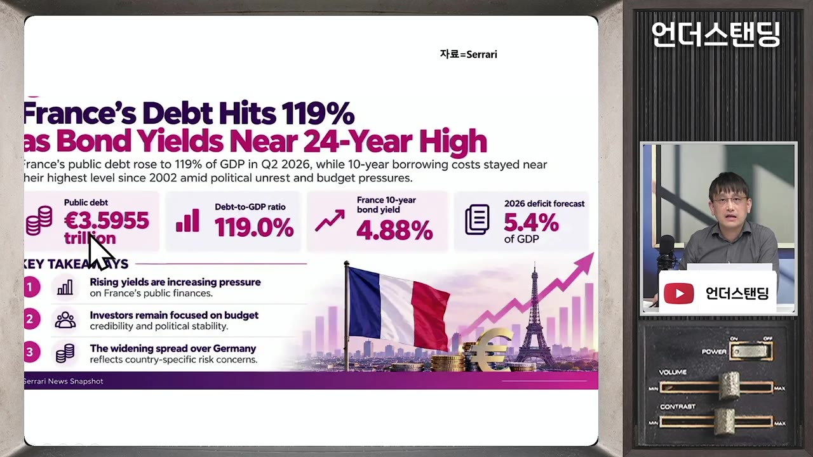
부자 증세로는 해결이 안 된다
- 마크롱은 집권 초 부유세를 폐지했습니다. 하지만 노동개혁 등 후속 개혁이 따라주지 않아 "부자 세금만 깎아 줬다"는 불만이 큽니다.
- 기자가 부자 증세로는 부족하다고 보는 근거는 이렇습니다. (30:13)
- 프랑스 내에서 거론되는 부자 증세 예상 세수로는 약 220조 원의 적자를 메울 수 없습니다.
- 올랑드 정부 때 최고세율 75%의 '슈퍼리치세'를 실제로 걷었지만, 부자들이 빠져나가는 부작용으로 2년 만에 스스로 중단했습니다.
- 유럽은 이웃 나라로 이주하기가 쉽습니다.
- 래퍼곡선(세율이 적정선을 넘으면 오히려 세수가 줄어드는 현상): 근로 의욕 저하, 해외 도피, 탈세가 늘고 외국인 투자도 줄어듭니다.
- 부자에 대한 반감이 유독 강한 이유도 짚습니다. (32:31)
- 유럽에는 21세기에 새로 등장한 빅테크가 없습니다. 메타·구글·삼성전자·SK하이닉스 같은 기업이 없다는 뜻입니다.
- 부자 대부분이 수백 년 이어진 상속 부자이고, 19~20세기 방식 그대로 돈을 법니다.
- 기자는 한국에서 '재벌' 비판이 줄어든 이유를 삼성전자·SK하이닉스가 세계를 주도하며 자긍심과 세금을 안겨 주기 때문이라고 봅니다.
성장이 멈췄다: 먹고살기 힘든 프랑스인
- 1인당 GDP는 2008년에 정점을 찍은 뒤 다시 그 수준을 회복하는 데 15년 이상 걸렸습니다. 2007년 아이폰 등장 이후 모바일 전환에 뒤처진 결과라는 해석입니다. (34:27)
- 미국은 금융위기 때 생산성 낮은 기업이 정리되면서 새 산업으로 이동했고, 오히려 더 강해졌습니다.
- 청년실업률은 19.8%로 독일(약 7%)이나 한국(6%대)과 차이가 큽니다. 공공 부문 일자리는 기성세대가 차지하고 있고, 재정 여력이 없어 신규 채용도 적습니다.
- 작년 중소기업·자영업체 7만 곳이 파산했고, 올해도 매달 약 6천 곳이 파산하고 있습니다. 가계의 18%는 매달 적자입니다.
- 소득 구조는 다음과 같습니다. (40:28)
- 평균 세전 급여 약 3,600유로 → 실수령 약 2,500유로
- 중위 실수령 약 2,190유로. 필수 지출을 빼면 재량 지출은 약 700유로
- 집주인은 월세의 3배 이상 소득이 있어야 세입자를 받습니다. 한번 들이면 내보내기 어렵기 때문입니다.
- 구매력 기준(PPP) 1인당 GDP는 IMF 추정상 올해부터 한국이 프랑스를 역전합니다. 2000년에는 한국이 프랑스의 절반도 안 됐습니다.
- 유로스타트 구매력 기준 비교에서 EU 평균을 100으로 놓으면 키프로스가 99, 프랑스가 98입니다. 르피가로는 "키프로스·벨기에보다 가난해졌다"고 보도했습니다. (44:47)
- 키프로스는 세율을 낮춰 아일랜드처럼 금융·디지털 기업을 유치하면서 순위를 끌어올렸습니다.
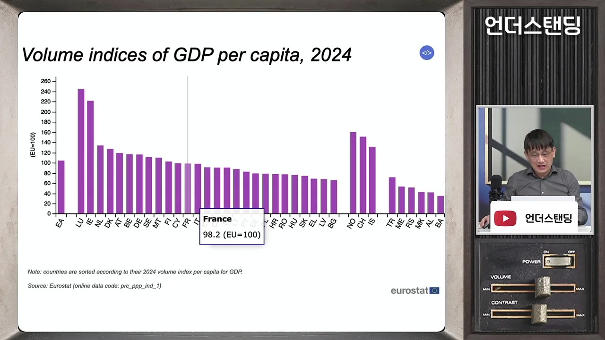
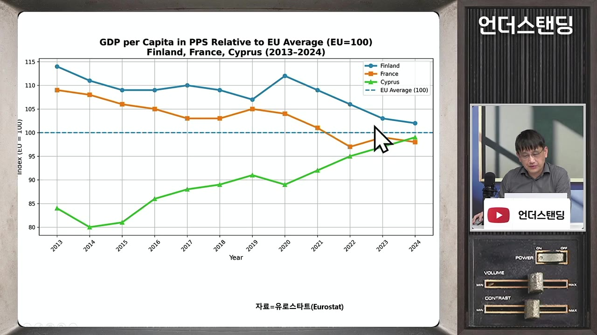
세대 갈등이 아니다
- 청년들은 노인 연금을 줄여 자기에게 달라고 요구하지 않습니다. 오히려 세대 갈등이라면 정해진 파이 안에서 타협할 수 있으니 해결이 쉬웠을 것이라는 게 기자의 설명입니다. (36:24)
- 남의 것을 빼앗지 않는다는 사회 연대 가치가 강하고, 나도 나이 들면 누려야 한다는 생각이 있습니다.
- 현실적으로는 무직인 자녀가 부모 연금으로 생활하는 가정이 많습니다.
- 불만의 본질은 "앞세대가 누린 것을 나는 못 누릴 것"이라는 절망입니다. 혜택은 원래 주어진 것이라 여기는데, 그게 줄어드는 상황입니다.
재정 문제의 핵심: 연금
- 소득대체율(은퇴 전 소득 대비 연금 비율)은 프랑스 72%로, 독일 55%·영국 54%보다 훨씬 높습니다. 연봉 1억 원인 사람에게 일 안 해도 7,200만 원을 준다면 빨리 은퇴하고 싶어진다는 비유를 듭니다. (46:18)
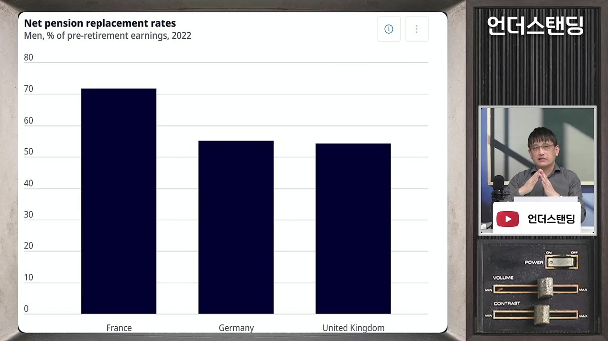
- 파이낸셜타임스(FT) 분석에서 근로자 실소득을 100으로 놓으면, 연금생활자 실질소득이 100을 넘는 나라는 프랑스뿐입니다. 네덜란드·스웨덴·덴마크보다도 훨씬 높습니다. (47:53)
- 이유 1: 은퇴자는 사회보험료를 내지 않아 실수령액이 큽니다.
- 이유 2: 배우자 사망 시 연금을 이어받는 비율이 이탈리아보다 높습니다. 이탈리아는 소득대체율이 더 높지만 이 지표에서는 프랑스보다 낮게 나옵니다.
- 연금은 적립 기금 없이 그해 걷은 보험료로 그해 지급하는 구조이고, 모자라면 정부가 채웁니다. (49:52)
- 사회복지 지출은 GDP의 30%로 OECD 최고 수준이며, 그중 14%p가 연금입니다.
- 연금 지급 총액은 약 610조 원인데 보험료 수입은 65%(약 400조 원)뿐입니다. 나머지 약 210조 원은 국고와 다른 기금에서 끌어옵니다.
- 회계상으로는 끌어온 돈이 '수입'으로 잡혀서 적자가 작아 보입니다.
- 은퇴자 1명당 현역 근로자 수도 계속 줄고 있습니다.
| 시기 | 은퇴자 1명당 근로자 |
|---|---|
| 1960년대 | 약 4명 |
| 1980년대 | 약 3명 |
| 2002년 | 2.14명 |
| 작년 | 1.7명 |
- 연금 개혁 반대 측의 유명한 카툰이 있습니다. 평균 사회 진출 나이인 22세 청년이 허리 굽은 62·65·67세 노인이 일하는 모습을 보며 절망하는 그림입니다. 노인이 일하는 것 자체를 비정상으로 보는 사고방식을 보여 줍니다.
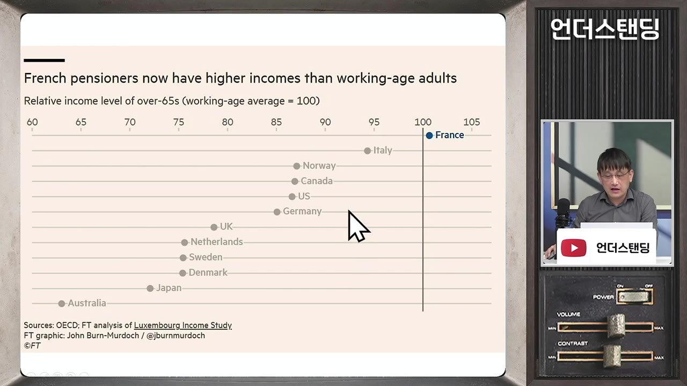
- 미테랑 하향
- 사르코지 인상
- 마크롱 인상
- 대선 공약 역주행
- 1미테랑 하향
1982년, 첫 좌파 대통령 미테랑이 65세를 한꺼번에 60세로 낮췄다. 청년 일자리 확보라는 명분과 좌파 연합에 대한 보상 성격
- 2사르코지 인상
재정이 버티지 못해 62세로 올렸다. 저항이 컸다
- 3마크롱 인상
64세로 올리는 안을 헌법상 긴급 권한으로 통과시켰지만 반발로 시행을 보류했다 (시한은 자막상 '2018년 초'로 들려 불분명)
- 4대선 공약 역주행
르펜은 62세 유지와 고졸 블루칼라 60세 수급, 멜랑숑은 60세로 하향을 내걸었다. 필리프만 65세 이상으로 인상을 주장한다
고용주 부담이 일자리를 해외로 밀어낸다
- 연금 보험료는 대부분 나라가 근로자와 고용주가 반반씩 내지만, 프랑스는 고용주 6 : 근로자 4입니다. 2차 대전 직후 "노동의 노후는 자본이 책임진다"는 사회주의 사조가 반영됐습니다. (56:52)
- 전체 인건비에서 고용주 사회보험료가 차지하는 비중은 OECD 평균의 2배, 영국의 2배 이상, 한국의 거의 3배입니다.
- 연봉 대비 고용주 사회보험료는 36%입니다. 최저임금 2배 수준(한국으로 치면 연봉 5천만 원대) 근로자는 46%에 이릅니다.
- 연봉 1억 원을 주려면 사회보험료로 4,600만 원을 더 내야 한다는 계산입니다.
- 독일과 비교하면 근로자 실수령 비율은 독일이 오히려 낮습니다. 차이는 누가 부담하느냐입니다. 기자는 독일처럼 근로자 쪽에서 걷는 편이 고용과 공장 유지에 유리하다고 주장합니다. (1:00:23)
- 고용주 부담 과중
- 고용 축소·해외 이전
- 세수 감소
- 재정 악화
- 1고용주 부담 과중
정규직 1명을 쓸 때 인건비가 크고, 해고도 어렵다
- 2고용 축소·해외 이전
국내 기업은 나가고 해외 기업은 안 들어온다
- 국내 자동차 생산: 2000~2005년 350만 대 이상 → 2025년 146만 대
- 르노 국내 생산 비중 약 20% (독일 약 30%, 현대·기아 48~49%)
- 국내 100명 고용당 해외 62명 고용 (독일보다 훨씬 높음)
- 3세수 감소
일자리와 생산이 줄어 세금이 덜 걷힌다. 실업률은 독일의 2배
- 4재정 악화
연금 구멍을 메울 돈이 더 부족해진다
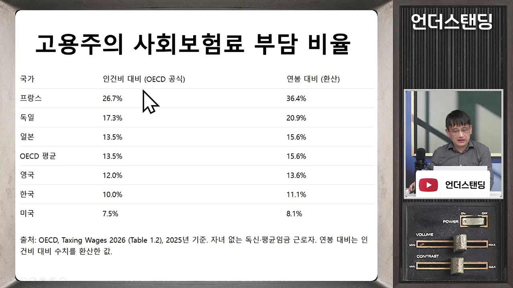
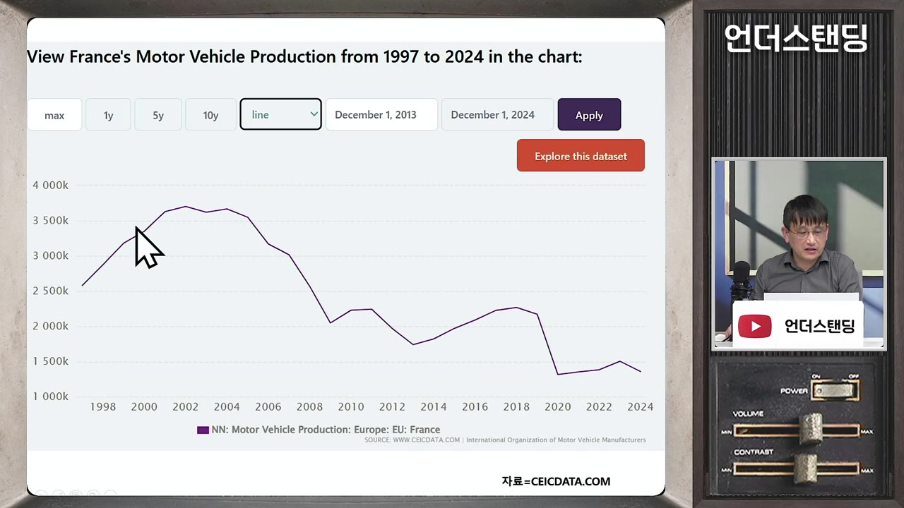
비대한 공공 부문, 그리고 '220조 원'이 세 번
- 공무원 등 공공 인력은 약 570만 명으로 인구의 8%대입니다. 한국은 2%대입니다. (1:05:15)
- GDP 대비 공무원 인건비는 12%대로, 독일(7%대)과 비교됩니다. 독일 수준으로 줄이면 GDP의 5%, 약 220조 원을 아낄 수 있습니다.
- 기자는 비슷한 크기의 숫자 세 개가 겹친다고 짚습니다. (1:06:29)
- 연간 재정적자 ≈ 220조 원
- 정부가 메우는 연금 부족분 ≈ 210~220조 원
- 공공 부문을 독일 수준으로 효율화하면 아낄 돈 ≈ 220조 원
💡 연금 구멍과 비대한 공공 부문, 둘 중 하나라도 손대지 않으면 적자는 해결되지 않는다.
무너진 '프랑사프리크': 아프리카에서 얻던 이익의 상실
- 프랑사프리크(Françafrique)는 프랑스와 옛 아프리카 식민지 사이의 공생 관계를 뜻하는 말로, 갈수록 나쁜 의미로 쓰였습니다. 역사 잡지 L'Histoire는 이 관계를 "1960년 시작, 2024년 끝"이라고 정리했습니다. (1:07:40)
- 프랑스가 이익을 얻던 방식은 다음과 같습니다.
- 친불 독재 정권을 비호했고, 쿠데타가 나면 외인부대·특수부대로 진압했습니다.
- 광산 채굴권, 항만·철도 운영권을 확보했습니다.
- 화폐를 보증해 주는 대신 외환보유고의 절반 이상을 프랑스 중앙은행에 예치하게 했습니다(화폐 주권 장악).
- 바르칸 작전
- 볼로레 매각
- 니제르 우라늄 상실
- 가봉 망간 차단
- 1바르칸 작전
2014~2022년, 프랑스 본토 8배 면적의 사헬 지역을 5천 명대 병력(자막상 불분명)과 하루 100만 유로(약 15억 원)로 방어하다 국내 반발로 중단 (1:10:20)
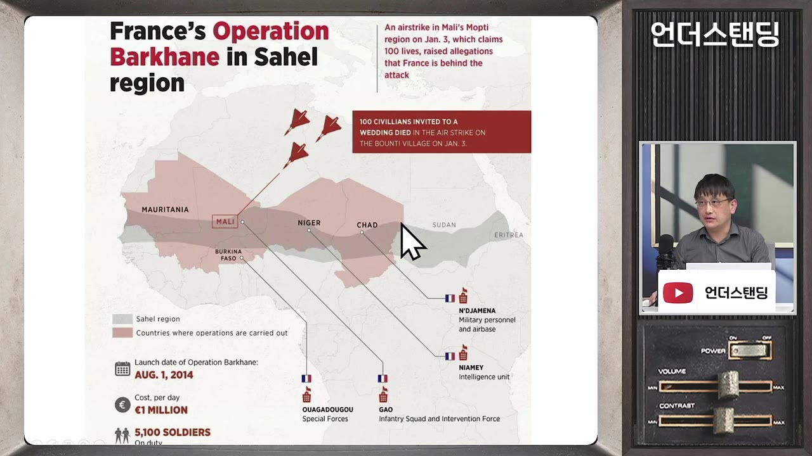
사헬 바르칸 작전 지도: 하루 €1 MILLION, 5,100 SOLDIERS · ▶ 1:10:06 - 2볼로레 매각
2022년, 서아프리카 16개 항만 운영권과 철도·물류를 가진 볼로레가 반프랑스 정서와 중국·러시아 자본 진출을 못 견디고 세계 최대 해운사 MSC에 매각
- 3니제르 우라늄 상실
원전 강국 프랑스에 값싼 우라늄을 대던 광산 개발권을 쿠데타 정권이 빼앗음 (영상은 2024년이라고 말함) (1:11:30)
- 4가봉 망간 차단
봉고 가문이 실권한 뒤(영상은 '작년'이라고 말함) 새 정권이 프랑스 에라메트의 망간 반출을 막음. 가봉은 매장량 2위(1위 남아공)이지만 순도가 더 높음
전망: 디폴트는 없겠지만, 강제 긴축 가능성
- 내년 대선에서는 마린 르펜(국민연합)이 지지율 32%로 압도적 1위이고, 결선 가상 대결에서도 모두 이깁니다. (1:14:20)
- 문제는 주요 후보 대부분이 연금을 더 주는 쪽을 공약하고 있다는 점입니다(위 흐름 4단계 참고). 멜랑숑은 국채를 안 갚아도 된다고 주장하며, 당선되면 브라질처럼 국채·주가가 폭락할 수 있다고 기자는 봅니다. 다만 당선 확률은 매우 낮다고 봅니다.
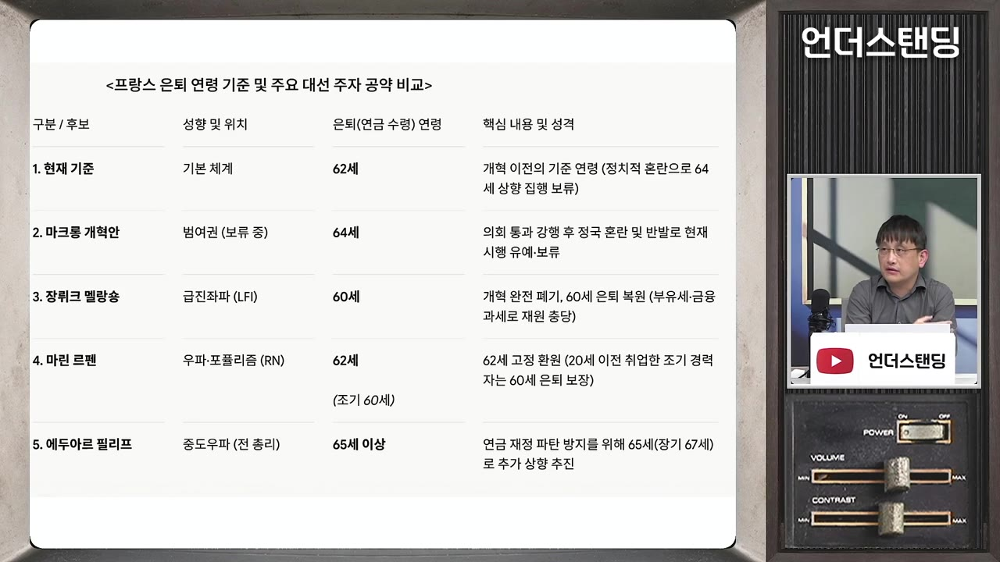
- 르펜이 당선돼 의회를 해산해도 총선이 지역구별 결선투표라 과반 확보가 어렵다고 봅니다. 마크롱은 2024년 의회 해산 후 조기 총선을 치렀습니다.
- 디폴트 가능성이 낮다고 보는 이유는, 독일·이탈리아·스페인 등의 대형 은행들이 프랑스 국채를 많이 들고 있어 휴지 조각이 되게 두지 않을 것이기 때문입니다. (1:17:29)
- 하지만 유럽중앙은행(ECB)의 국채 매입은 이번에는 쉽지 않다고 봅니다.
- 매입은 유로화를 푸는 것이라 물가 상승과 통화가치 하락 부담을 다른 회원국이 나눠 져야 합니다.
- 2010년대 초 남유럽 위기 때는 저금리였고, 독일 경제가 좋았고, 2015년 시리아 난민 유입 전이라 다른 나라를 돕는 데 대한 반감도 적었습니다. 지금은 세 조건이 모두 불리합니다.
- 기자의 결론은 스스로 긴축하기 어려우니 결국 외부 압력에 의한 긴축을 하게 될 것이라는 전망입니다. 한국 외환위기 때 IMF 총재가 프랑스인 미셸 캉드쉬였다는 점이 아이러니로 언급됩니다. (1:21:20)
- 투자자 관점에서는 최근 프랑스 국채 금리 하락이 일시적이고, 다시 오를 여지가 충분하다는 것이 영상 속 견해입니다(투자 판단은 본인 몫).
왜 프랑스는 받아들이지 못하나: 사고방식의 차이
- 기자는 이를 "나라를 잃어 본 적 없는 제국의 국민"의 사고방식으로 설명합니다. 정부가 모든 것을 공공서비스로 해 주는 것을 당연하게 여긴다는 것입니다. (1:27:50)
- 프랑스 대혁명, 식민지, 지배계급의 언어였던 불어, 관광 대국이라는 자부심이 강하고, 애국주의 교육도 강하다고 말합니다.
- 그래서 "훌륭한 나라인데 정치인이 잘못했다"고 생각합니다.
- 한국은 나라를 잃어 본 경험과 IMF 구제금융 경험이 있어 정부에 대한 기대치가 낮고 각자도생에 익숙하다는 대비를 합니다.
- 진행자는 인구 구조가 바뀌었는데 같은 제도를 유지하려는 것이 근본 문제라고 정리합니다. 덴마크처럼 작은 나라는 은퇴 연령 상향에 합의하기 쉽지만, 프랑스는 나라가 크고 '대국의 기상'이 남아 있어 어렵다고 덧붙입니다.
기억할 숫자·인용
- 46%: GDP 대비 조세부담률 (세계 최고 수준)
- 119%: GDP 대비 국가채무 (1999년 61%), 약 3조 6천억 유로(약 5,000조 원)
- 5.4%, 약 220조 원: 연간 재정적자
- 94%: 중앙정부 교육 예산 중 인건비성 고정 지출 (중앙+지방 합산 시 73%)
- 72% vs 55% vs 54%: 소득대체율 (프랑스, 독일, 영국)
- 610조 원 / 65% / 210조 원: 연금 지급 총액 / 보험료로 충당하는 비율 / 정부가 메우는 금액
- 1.7명: 은퇴자 1명당 근로자 (1960년대 4명)
- 19.8%: 청년실업률 (독일 약 7%)
- 350만 대 → 146만 대: 국내 자동차 생산량 (2000년대 초 → 2025년)
- 740억 유로(약 110조 원): 올해 국채 이자, 국방 예산보다 많음
- 98: EU 평균을 100으로 한 구매력 기준 1인당 GDP (키프로스 99)
- "자리를 둘러싼 투쟁은 No, 계급 투쟁은 Yes" — 학생 시위 구호
- "학생은 유권자가 아니기 때문" — 교육 예산이 먼저 깎인 이유에 대한 기자의 해석
생각해볼 점
- (내 의견) 사고방식 설명의 한계: '제국의 국민', '국민성'으로 설명하는 부분은 기자의 해석입니다. 데이터로 뒷받침된 재정·연금 분석과 구분해서 받아들일 필요가 있습니다.
- (내 의견) 사실관계 확인: 니제르 쿠데타(영상은 2024년)와 가봉 봉고 가문 실권(영상은 '작년') 시점은 공개 자료로 다시 확인해 보는 게 좋습니다. 일반적으로는 둘 다 2023년으로 알려져 있습니다. 바르칸 작전 병력 수와 연금 개혁 보류 시한도 자막상 불분명합니다.
- (내 의견) 해법의 효과: 고용주 부담을 근로자 쪽으로 옮기면 고용이 늘어난다는 주장은 기자의 견해입니다. 실질임금 감소에 대한 반발이나 실제 고용 효과는 별도로 따져 봐야 합니다. 한국도 고령화로 연금 부양비가 빠르게 나빠지고 있어 남의 일만은 아닙니다.
바로 해볼 일
- 프랑스 국채 10년물 금리(현재 4.8%대)를 투자 관심 목록에 넣고, 대선 일정과 함께 추이를 지켜보기
- 국민연금 공단 자료에서 한국 연금의 소득대체율과 부양비 전망을 찾아, 프랑스 숫자(72%, 1.7명)와 비교해 보기
- 영상의 사실관계 중 니제르·가봉 쿠데타 연도, 파르쿠르쉽 도입 연도를 검색해 확인하기